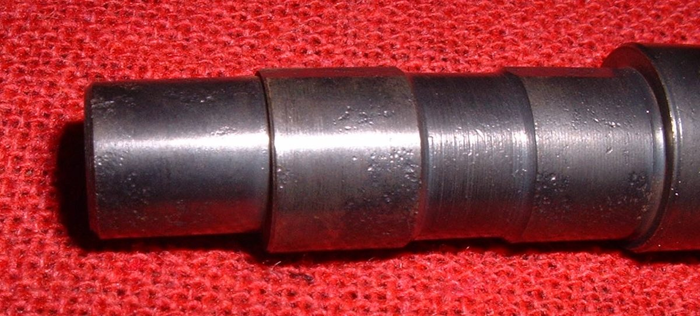
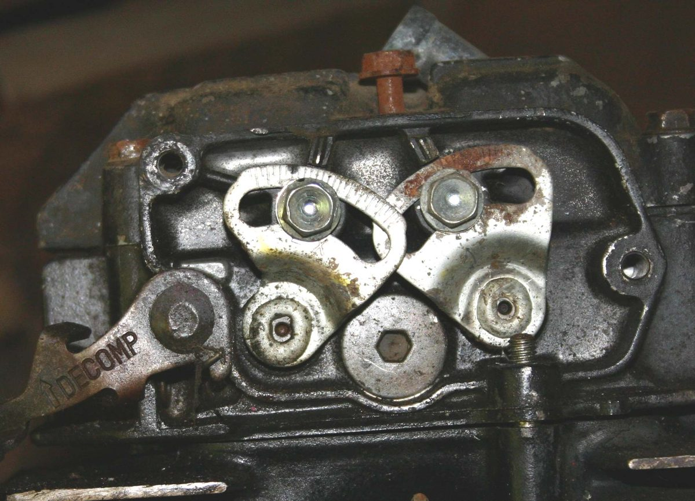
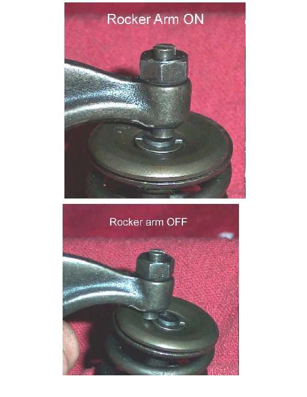

Rocker arms are small levers in the cylinder head that sit on a shaft. One end is pushed by the cam or a pushrod; the other end presses on the valve. Most commuter singles have a screw and locknut on the rocker to set the valve clearance. Riders often call these "tappets".
What it does
The rocker turns the lift of the cam or pushrod into a push on the valve. The adjuster screw sets a small gap (valve clearance) so the valve can close fully when hot. The rocker shaft and bore wear if oil is dirty or slow to arrive, and the screw tip wears where it touches the valve.
Signs it is worn or failing
- Ticking from the top of the engine, the most common sign.
- Clearance that closes up or opens again soon after adjustment.
- Hard to start when hot or low compression if the gap has closed.
- Side play of the rocker on its shaft, or a dented screw tip.
When to replace it
When the shaft or bore is past the limit, the pad that touches the cam or pushrod is pitted, or the adjuster thread is stripped. Follow your bike's manual.
What to match when buying
- Match engine code and inlet or exhaust position; they can differ.
- Buy shafts and rockers together if both are worn. Check the adjuster screw and locknut thread.
- Good rockers have a hard, smooth pad and a bore without scoring.
Fitting notes
- Setting the clearance is a home job: Check and adjust valve clearance. Do it with the engine cold, at top dead centre on the compression stroke.
- Hold the screw still while tightening the locknut, then check the gap again.
- Replacing rockers means opening the head: Assess the top end.
- When tightening the cap, make sure the rocker ends sit on the centre of the valve stem and do not catch on its edge.
Reference (K-Light 125)
| Item | Value | PDF page |
|---|---|---|
| Valve clearance (cold) | inlet and exhaust 0.05 to 0.07 mm | 202 |
| Adjuster locknut torque | 10 to 15 N·m | 194 |
| Rocker shaft to bore clearance | 0.012 to 0.038 mm, limit 0.08 mm | 202 |